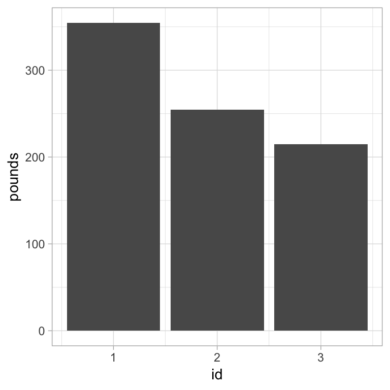
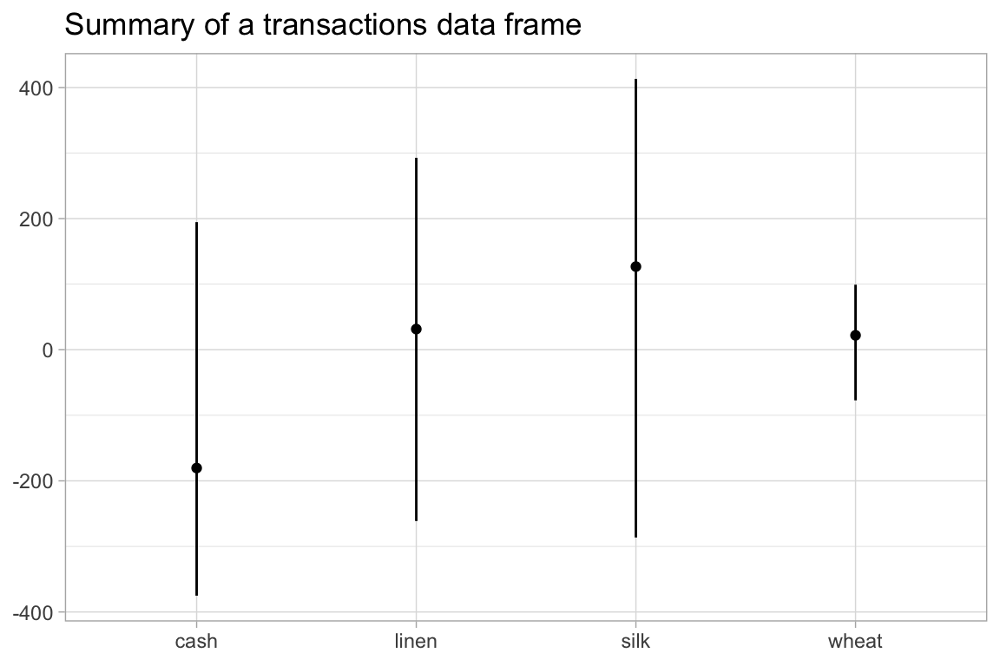

This vignette introduces the debkeepr package. The package provides an interface for working with non-decimal currencies that use the tripartite system of pounds, shillings, and pence. This vignette gives an overview of the functions in debkeepr and the implementation of the lsd class used to represent pounds, shillings, and pence values in R. Further demonstration of the benefits of debkeepr for making calculations with monetary values found in historical sources can be seen in the Transactions in Richard Dafforne’s Journal vignette, while an example analysis of a set of account books is shown in the Analysis of Richard Dafforne’s Journal and Ledger vignette.
debkeepr attempts to solve two problems in analyzing monetary values that are in the non-decimal form of pounds, shillings, and pence. Firstly, it provides a means to more easily and more accurately make arithmetic calculations on sets monetary values encountered in the course of research. Secondly, debkeepr facilitates the analysis and visualization of larger sets of monetary values found in historical account books.
debkeepr begin with the prefix deb_, which is short for double-entry bookkeeping.lsd or an object that can be coerced to class lsd: a numeric vector of length 3 or a list of such vectors.lsd.lsd list column that denotes the value of each transaction, a transactions data frame contains variables recording the credit and debit account for each transaction.debkeepr contains two data sets from the example journal and ledger in the third edition of Richard Dafforne’s Merchant’s Mirrour from 1660. Dafforne’s text taught the practices of double-entry bookkeeping and provided a full set of account books to be used for educational purposes.dafforne_transactions is a transactions data frame with 177 transactions.dafforne_accounts possesses information about the 46 accounts in the journal and ledger.To understand the monetary system of pounds, shillings, and pence it is necessary to distinguish between money of account, or the measure of values, and coins, or the medium of exchange, though the two were tied together. Until the modern period, pounds, shillings, and pence were rarely actual coins, and the ratios of the value of coins fluctuated frequently. Thus, the pounds, shillings, and pence system refers to money of account and not to actual coins, even if coins with those names existed at different times.
The pounds, shillings, and pence system dates back to the Carolingian Empire. The main coin used in the Late Roman Empire had been the golden solidus, introduced by Constantine in 309. However, the shrinking of the economy and political splintering that occurred after the fall of the Roman Empire diminished the need for gold coins. In the 6th century, the Frankish rulers who took over the Roman mints reacted by creating triens or tremissis, smaller gold coins worth one-third of a solidus. From this point, the solidus was no longer produced as a physical coin used for exchange in the western kingdoms, but it continued as a unit of account equivalent to three trientes. In the 7th century even devalued golden trientes proved to be too valuable for economic needs, and Frankish rulers began to produce silver coins based on the size and weight of the triens. The new silver penny was called a denarius, linking it to the old silver coin used in the Roman Republic. The silver penny provided the basis for the monetary system of Western Europe until the move to gold coins in the 14th century.
As the silver denarius overtook the golden triens, the triens became a unit of account equivalent to four denarii. In this way the solidus transformed into a unit of account representing 12 denarii even if 12 silver denarii of the 8th century would never have been equivalent to the pure gold solidus of the Late Roman Empire. The use of the libra as a third unit of account derived from the number of silver denarii struck from a pound or libra of silver. Though the actual number of coins struck from a pound of silver differed over time, the rate of 240 coins from a libra lasted long enough to become fossilized in much of Europe.1 The custom of counting coins in dozens (solidi) and scores of dozens (librae) spread throughout the Carolingian Empire and became engrained in much of Europe. By the early modern period a huge variety of monies of accounts had developed across Europe and beyond, and though many used the 1:20:240 ratios, others used a diversity of bases to represent the shillings and pence units.2
debkeepr implements the lsd class to deal with two interrelated problems in manipulating pounds, shillings, and pence (lsd) values in a programming environment such as R. In the first place, a single lsd value possesses three separate units. Making matters more difficult, the shillings and pence units are non-decimal, and the bases for the units differed by region, coinage used as the money of account, and era. The latter issue means that the actual value represented by three numbers standing in for pounds, shillings, and pence cannot be known outside of the context of the bases for the shillings and pence units.
The lsd class provides solutions to these issues by unifying pounds, shillings, and pence values into a numeric vector of length three and the creation of a bases attribute to track and implement the specified bases for the shillings and pence units. The first position of each vector represents the pounds unit, the second the shillings unit, and the third the pence unit. The bases attribute consists of a numeric vector of length 2. The first position records the base for the shillings unit, and the second position provides the base for the pence unit. The bases attribute ensures that pounds, shillings, and pence values are always associated with their correct bases and that values with different bases are never unknowingly brought together.
lsd objects are stored as lists, making it possible to have multiple lsd values in a single lsd object and to implement lsd objects as list columns in a data frame or tibble. The lsd class uses its own printing method to reduce the space taken up by each lsd value compared to the default list print method. The print method borrows from that of data frame, since the structures of the objects are similar.
Objects of class lsd can be created either explicitly or implicitly. debkeepr provides two methods for the explicit creation of lsd objects.
deb_lsd() uses separate pounds (l), shillings (s), and pence (d) vectors, alongside a bases vector, to create an lsd object. l, s, and d must all be the same length, and the length of the lsd object will be the same as the input vectors.deb_as_lsd() converts a numeric vector of length three or a list of such vectors into an lsd object.In addition, all debkeepr functions that produce a pounds, shillings, and pence value return an object of class lsd. Whether the input to the lsd argument of a debkeepr function is an lsd object, a numeric vector of length 3, or a list of such numeric vectors, the returned value will be of class lsd.
library(debkeepr)
# Explicitly create an lsd object from separate l, s, and d vectors
# single lsd value
deb_lsd(l = 10, s = 8, d = 11)
#> l s d
#> [1] 10 8 11
# multiple lsd values
deb_lsd(l = c(10, 12, 5), s = c(8, 16, 3), d = c(11, 2, 8))
#> l s d
#> [1] 10 8 11
#> [2] 12 16 2
#> [3] 5 3 8
# Explicitly create an lsd object from lsd vectors
# single lsd value
deb_as_lsd(lsd = c(10, 8, 11))
#> l s d
#> [1] 10 8 11
# multiple lsd values
deb_as_lsd(lsd = list(c(10, 8, 11), c(12, 16, 2), c(5, 3, 8)))
#> l s d
#> [1] 10 8 11
#> [2] 12 16 2
#> [3] 5 3 8An lsd list column in a data frame can be constructed at the time of making the data frame or from separate pounds, shillings, and pence variables. The former method necessitates the use of the tibble package, as a list column cannot be added to a data frame with the base data.frame() function. Creating a list column of class lsd with tibble() can be done with either deb_lsd() or deb_as_lsd(). Another method, which can be used in both tibbles and base data frames, is to convert separate pounds, shillings, and pence variables to an lsd list column with deb_lsd_gather().3 The function possesses an optional replace argument to remove the original pounds, shillings, and pence variables. The inverse operation of converting an lsd list column to separate pounds, shillings, and pence variables can be done with deb_lsd_spread(). One drawback to the use of a list column, is that writing a data frame with an lsd list column to a csv file will not maintain the attributes of the lsd column. Alternatives are to save the file as an rds file or to use deb_lsd_spread() and save as a csv.
library(tibble)
# lsd list column from scratch with tibble
tibble(lsd = deb_lsd(l = c(10, 12, 5), s = c(8, 16, 3), d = c(11, 2, 8)))
#> # A tibble: 3 x 1
#> lsd
#> <S3: lsd>
#> 1 10, 8, 11
#> 2 12, 16, 2
#> 3 5, 3, 8
# lsd list column from separate l, s, and d variables
lsd_df <- data.frame(l = c(10, 12, 5), s = c(8, 16, 3), d = c(11, 2, 8))
deb_lsd_gather(df = lsd_df, replace = TRUE)
#> lsd
#> 1 10, 8, 11
#> 2 12, 16, 2
#> 3 5, 3, 8With few exceptions all of the functions in debkeepr possess a bases argument that provides the values to be stored as the bases attribute of an lsd object. The values for the bases argument must be positive and cannot be missing or zero. The default is c(20, 12), which conforms to the most widely used system of 1 pound = 20 shillings and 1 shilling = 12 pence. Unless an alternative set of bases is provided, the default value will be applied. However, if the input to a debkeepr function is an object of class lsd, the bases attribute will be used and override any values passed to the bases argument. This means that the use of debkeepr functions on an lsd list column do not apply the bases argument. The only way to alter the bases attribute of an lsd object is to do so explicitly with deb_convert_bases(). An easy way to access the bases attribute of an lsd object is with deb_bases().
# lsd object with default bases
deb_lsd(l = c(10, 12, 5), s = c(8, 16, 3), d = c(11, 2, 8))
#> l s d
#> [1] 10 8 11
#> [2] 12 16 2
#> [3] 5 3 8
# lsd object with alternative bases of Holland guilders
deb_lsd(l = c(10, 12, 5), s = c(8, 16, 3), d = c(11, 2, 8), bases = c(20, 16))
#> l s d
#> [1] 10 8 11
#> [2] 12 16 2
#> [3] 5 3 8
# confirm the bases
deb_lsd(l = c(10, 12, 5), s = c(8, 16, 3), d = c(11, 2, 8), bases = c(20, 16)) %>%
deb_bases()
#> s d
#> 20 16The creation and use of lsd objects by themselves are most likely to be useful for doing quick calculations on values in historical sources since they cannot be directly attached to information about dates, accounts involved, or other attribute data as is possible in a data frame with an lsd list column. However, the dispersed nature of accounting practices and mediums in which historians will encounter pounds, shillings, and pence values makes these quick calculations quite useful.
The pounds, shillings, and pence values used as inputs to debkeepr functions can be of three types:
lsd
The examples below will show the various types of possible inputs.
# Create lsd objects with default bases to be used in examples
single_lsd <- deb_as_lsd(c(5, 13, 8))
mult_lsd <- deb_lsd(l = c(10, 12, 5), s = c(8, 16, 3), d = c(11, 2, 8))A particularly useful function for one-off uses is deb_normalize(), which normalizes an lsd value to the bases provided in the bases argument or in the bases attribute. For instance, adding together a set of values by hand might result in the non-standard form of £10 64s. 71d.
# Normalize a non-standard lsd value
deb_normalize(lsd = c(10, 64, 71))
#> l s d
#> [1] 13 9 11The bases for the shillings and pence units can be changed with the bases argument.
# Normalize a non-standard lsd value with alternative bases
deb_normalize(lsd = c(10, 64, 71), bases = c(20, 16))
#> l s d
#> [1] 13 8 7Multiple lsd values can be normalized by placing numeric vectors into a list. The below example demonstrates some of the types of values that can be properly normalized by deb_normalize(). The function accepts negative values or even a mix of positive and negative values within a numeric vector. Any of the units can also possess decimalized values.
# To normalize multiple lsd values use a list of lsd vectors
deb_normalize(lsd = list(c(4, 34, 89), c(-9, -75, -19), c(15.85, 36.15, 56)))
#> l s d
#> [1] 6 1 5.0
#> [2] -12 -16 -7.0
#> [3] 17 17 9.8Another option available in all of the functions that deal with lsd values is to round the pence unit to a specified decimal place. The round argument helps to simplify the output and avoids the issue of rounding lsd values to a non-normalized value. The default is to round to the 5th decimal place.
# Using round outside of debkeepr functions can lead to non-normalized value
round(c(9, 19, 11.999999), digits = 5)
#> [1] 9 19 12
# Normalization applied within rounding
deb_normalize(lsd = c(9, 19, 11.999999), round = 5)
#> l s d
#> [1] 10 0 0
# Rounding is useful to return all pence values as whole numbers
deb_normalize(lsd = c(5, 11, 8.95), round = 0)
#> l s d
#> [1] 5 11 9debkeepr contains functions to perform arithmetic operations such as addition, subtraction, multiplication, and division on lsd values.
There are two different ways to add lsd values. deb_sum() takes any number of lsd objects or objects that can be coerced to class lsd and returns an lsd object of length one that is the sum of the input values. As with all functions that contain more than one lsd value, all inputs must have the same bases, and any non-lsd objects will be coerced to the bases of the lsd object(s).
deb_add() has a different use case. It only accepts two sets of lsd values: lsd1 and lsd2. If lsd1 and lsd2 are both single lsd values, the output will be equivalent to deb_sum(). However, if one or both of the inputs contain multiple values, the output will be the length of the longer list and each element of the list is added to the equivalent element of the other input. The lists of lsd values must either be the same length or one must be length one. deb_subtract() is equivalent to deb_add() with lsd2 subtracted from lsd1.
# Use deb_sum to reduce multiple lsd values to a single value
deb_sum(single_lsd, c(8, 14, 11))
#> l s d
#> [1] 14 8 7
deb_sum(mult_lsd, single_lsd)
#> l s d
#> [1] 34 2 5
# deb_add is the same as deb_sum if inputs are single lsd values
deb_add(lsd1 = single_lsd, lsd2 = c(8, 14, 11))
#> l s d
#> [1] 14 8 7
# If one input has multiple lsd values, the output will have the same number of lsd values.
# Here, £5 13s. 8d. is added to each lsd value in mult_lsd.
deb_add(lsd1 = mult_lsd, lsd2 = single_lsd)
#> l s d
#> [1] 16 2 7
#> [2] 18 9 10
#> [3] 10 17 4
# deb_subtract has the same use case as deb_add
deb_subtract(lsd1 = c(8, 14, 11), lsd2 = single_lsd)
#> l s d
#> [1] 3 1 3
# Subtract lsd value from multiple lsd values
deb_subtract(lsd1 = mult_lsd, lsd2 = single_lsd)
#> l s d
#> [1] 4 15 3
#> [2] 7 2 6
#> [3] 0 -10 0Multiplication and division work similarly to deb_add() and deb_subtract(), but instead of using a second lsd value, deb_multiply() and deb_divide() multiply and divide an lsd values by a single value: x.
# Multiplcation
deb_multiply(lsd = single_lsd, x = 5)
#> l s d
#> [1] 28 8 4
# Multiplication of multiple lsd values
deb_multiply(lsd = mult_lsd, x = 5)
#> l s d
#> [1] 52 4 7
#> [2] 64 0 10
#> [3] 25 18 4
# Division
deb_divide(lsd = c(136, 17, 9), x = 5)
#> l s d
#> [1] 27 7 6.6
# Division of multiple lsd values
deb_divide(lsd = mult_lsd, x = 3)
#> l s d
#> [1] 3 9 7.66667
#> [2] 4 5 4.66667
#> [3] 1 14 6.66667Because lsd is always the first argument in debkeepr functions that deal with lsd vectors, debkeepr functions can be chained together with the pipe (%>%). For instance, you can find the revenue gained by each of two partners who worked on a commission of 3% for the sum of four separate sales in a single pipeline.
# 3% commision between two partners
deb_sum(c(245, 14, 10), c(379, 16, 0), c(764, 9, 11), c(302, 4, 8)) %>%
deb_multiply(x = 0.03) %>%
deb_divide(x = 2)
#> l s d
#> [1] 25 7 8.175Modifying the round argument may be especially useful when dealing with multiplication and division. For example, an lsd value divided by a number and then the result multiplied by the same number may not be equivalent because of the default rounding.
# Not equivalent due to default rounding
deb_divide(c(6, 8, 1), x = 3) %>%
deb_multiply(x = 3)
#> l s d
#> [1] 6 8 0.99999
# Can be solved by reducing the rounding argument
deb_divide(c(6, 8, 1), x = 3) %>%
deb_multiply(x = 3, round = 4)
#> l s d
#> [1] 6 8 1Alongside arithmetic operations, debkeepr possesses functions to do common financial operations such as calculate interest and the exchange between different currencies. deb_interest() contains arguments for the interest rate, the duration over which the interest should be calculated, and whether the principal should be included in the returned value.
# Interest rate at 6.25% over a 5 year period with principal
deb_interest(lsd = c(100, 0, 0), interest = 0.0625, duration = 5)
#> l s d
#> [1] 131 5 0
# Calculate only the accrued interest
deb_interest(lsd = c(100, 0, 0), interest = 0.0625, duration = 5, with_principal = FALSE)
#> l s d
#> [1] 31 5 0Exchange between different currencies creates a number of potential problems, but debkeepr provides multiple ways to handle currency exchanges. The most straightforward method for calculating the exchange between two currencies is to use deb_exchange(), which uses the shillings unit to compare the currencies. If the exchange rate includes a pence value, you can either convert to decimalized shillings or add the pence over the base of the pence as shown below. However, the exchange rate between currencies may not always be given in terms of shillings. For instance, a rate might be provided as 90d. This could be normalized to shillings, but in this case it may be easier to use deb_multiply() and compare 90d. to 240d. in a pound.
# Exchange between currencies at rate of 31 shillings or 1 to 1.55
deb_exchange(lsd = c(100, 0, 0), shillings_rate = 31)
#> l s d
#> [1] 155 0 0
# Exchange rate of 31s. 4d.
deb_exchange(lsd = c(100, 0, 0), shillings_rate = 31 + 4/12)
#> l s d
#> [1] 156 13 4
# Exchange rate of 90d. using deb_multiply
deb_multiply(lsd = c(100, 0, 0), x = 90 / 240)
#> l s d
#> [1] 37 10 0debkeepr also provides two functions that can help in dealing with exchange rates between currencies. deb_exchange_rate() accepts two lsd values to find the exchange rate between the values. The first argument, lsd1, is the fixed currency that is reduced to £1 and lsd2 is the variable currency. Because it may not always make sense to return the exchange rate in a single format, this function has an option to return the exchange rate as a normalized lsd value, in terms of shillings and pence as used by deb_exchange(), or just in terms of pence. Though the latter two formats are not normalized, all options return an lsd object.
The second helper function is deb_invert_rate(). Given an exchange rate, deb_invert_rate() finds the exchange rate in the opposite direction. Like deb_exchange_rate(), it has options to return the exchange rate as a normalized lsd value, in terms of shillings and pence, or just in terms of pence. The default output for both deb_exchange_rate() and deb_invert_rate() is shillings and pence.
# Find the exchange rate between two values
deb_exchange_rate(lsd1 = c(100, 0, 0), lsd2 = c(166, 13, 4))
#> l s d
#> [1] 0 33 4
# Find the same rate in terms of pence
deb_exchange_rate(lsd1 = c(100, 0, 0), lsd2 = c(166, 13, 4), output = "pence")
#> l s d
#> [1] 0 0 400
# Can find the exchange in the opposite direction by switching lsd1 and lsd2
deb_exchange_rate(lsd1 = c(166, 13, 4), lsd2 = c(100, 0, 0))
#> l s d
#> [1] 0 12 0
# Or you can use deb_invert_rate
deb_invert_rate(exchange_rate = c(0, 33, 4))
#> l s d
#> [1] 0 12 0
# This can also be expressed in terms of pence
deb_invert_rate(exchange_rate = c(0, 33, 4), output = "pence")
#> l s d
#> [1] 0 0 144The most challenging exchange between currencies takes place when the bases for the shillings and pence units differ between the two currencies. Though the system of 20-base shilling and 12-base penny was widespread, various monies of account used alternative bases. deb_convert_bases() provides a way to convert from one base system to another. It also has a ratio argument that can be used similarly to deb_multiply() to include an exchange rate between currencies in addition to the base conversion. A good example is the conversion between the Flemish pound and guilders in Holland, which were both in use in the seventeenth-century Low Countries. Flemish pounds used the 20s. and 12d. base system, but guilders consisted of 20 stuivers of 16 penningen. In addition, guilders and Flemish pounds were tied together at a rate of 6 guilders to £1 Flemish. deb_convert_bases() can perform this and various other base conversions.
# Convert Flemish pounds to guilders
deb_convert_bases(lsd = c(104, 8, 3),
bases1 = c(20, 12),
bases2 = c(20, 16),
ratio = 6)
#> l s d
#> [1] 626 9 8
# bases1 argument is not necessary with an lsd object
# Convert guilders to Flemish pounds
guilders <- deb_as_lsd(lsd = c(1224, 19, 8), bases = c(20, 16))
deb_convert_bases(lsd = guilders,
bases2 = c(20, 12),
ratio = 1 / 6)
#> l s d
#> [1] 204 3 3
# Convert French crowns of 60 sous and 12 deniers to pound sterling
# at the rate of 72d. French crowns equals £1 sterling or 240d. sterling
deb_convert_bases(lsd = c(214, 50, 10),
bases1 = c(60, 12),
bases2 = c(20, 12),
ratio = 72 / 240)
#> l s d
#> [1] 64 9 1
# Base conversion can also be done in concert with deb_exchange()
# Convert from guilders to pounds sterling at the rate of 12s. Flemish
deb_convert_bases(lsd = guilders,
bases2 = c(20, 12),
ratio = 1 / 6) %>%
deb_exchange(shillings_rate = 12)
#> l s d
#> [1] 122 9 11.4While the goal of debkeepris to enable the calculation of lsd values and maintain their natural non-decimal form, sometimes it is useful to decimalize lsd values, reducing the values to a single unit with a base of 10. Alternatively, you may come across decimalized values that you want to expand to lsd values. debkeepr provides functions to convert between decimalized and non-decimalized values for each of the three units in lsd values. One detail to keep in mind is that decimalization outputs a normal numeric vector, and so the bases attribute is dropped.
All of the decimalization functions follow the naming convention of input_output. For instance, deb_lsd_l() converts an lsd value to decimalized pounds, while conversion between decimalized pounds to an lsd object is done with deb_l_lsd(). There are functions to do the same process with both shillings and pence.
# decimalize pounds
deb_lsd_l(lsd = mult_lsd)
#> [1] 10.445833 12.808333 5.183333
deb_l_lsd(l = c(5.825, 10.666666666, 9.5))
#> l s d
#> [1] 5 16 6
#> [2] 10 13 4
#> [3] 9 10 0
# guilders to stuivers and back
deb_lsd_s(lsd = c(10, 12, 7), bases = c(20, 16))
#> [1] 212.4375
deb_s_lsd(s = 212.4375, bases = c(20, 16))
#> l s d
#> [1] 10 12 7
# decimalize pence
deb_lsd_d(lsd = c(10, 12, 7))
#> [1] 2551
deb_d_lsd(d = 2551)
#> l s d
#> [1] 10 12 7Almost all of the functions that can be applied in the context of lsd objects can also be used in the context of an lsd list column in a data frame. debkeepr functions are designed to work within the tidyverse workflow and particularly with dplyr::mutate(). This section provides examples of manipulating lsd list columns with the help of dplyr.
# load dplyr and create tibble with lsd list column
library(dplyr)
(lsd_tbl <- tibble(id = c(1, 3, 2, 1, 2),
lsd = deb_lsd(l = c(102, 215, 98, 251, 156),
s = c(18, 0, 9, 13, 6),
d = c(9, 11, 7, 4, 8))))
#> # A tibble: 5 x 2
#> id lsd
#> <dbl> <S3: lsd>
#> 1 1 102, 18, 9
#> 2 3 215, 0, 11
#> 3 2 98, 9, 7
#> 4 1 251, 13, 4
#> 5 2 156, 6, 8The “lsd” variable in lsd_tbl was created with deb_lsd() using the default bases of c(20, 12), and so all functions will automatically use these bases unless they are explicitly converted. It is always possible to check the bases of an lsd list column with deb_bases().
deb_bases(lsd_tbl$lsd)
#> s d
#> 20 12Most of the typical single-table verbs from dplyr work with an lsd list column as expected, though it is not possible to arrange() a data frame by an lsd list column. As noted above, the most useful workflow is to use mutate() or transmute() with debkeepr functions to create new variables. Thus, it is possible to multiply an lsd list column or calculate the accrued interest over a certain period of time.
# multiplication of an lsd list column
lsd_tbl %>%
mutate(lsd_x5 = deb_multiply(lsd = lsd, x = 5))
#> # A tibble: 5 x 3
#> id lsd lsd_x5
#> <dbl> <S3: lsd> <S3: lsd>
#> 1 1 102, 18, 9 514, 13, 9
#> 2 3 215, 0, 11 1075, 4, 7
#> 3 2 98, 9, 7 492, 7, 11
#> 4 1 251, 13, 4 1258, 6, 8
#> 5 2 156, 6, 8 781, 13, 4
# Interest at 8% after a 5 year period
lsd_tbl %>%
mutate(due = deb_interest(lsd = lsd, interest = 0.08, duration = 5))
#> # A tibble: 5 x 3
#> id lsd due
#> <dbl> <S3: lsd> <S3: lsd>
#> 1 1 102, 18, 9 144, 2, 3
#> 2 3 215, 0, 11 301.0, 1.0, 3.4
#> 3 2 98, 9, 7 137, 17, 5
#> 4 1 251, 13, 4 352, 6, 8
#> 5 2 156, 6, 8 218, 17, 4
# Make multiple new variables to find total due and interest charged
lsd_tbl %>%
mutate(due = deb_interest(lsd = lsd, interest = 0.08, duration = 5),
interest = deb_subtract(lsd1 = due, lsd2 = lsd))
#> # A tibble: 5 x 4
#> id lsd due interest
#> <dbl> <S3: lsd> <S3: lsd> <S3: lsd>
#> 1 1 102, 18, 9 144, 2, 3 41, 3, 6
#> 2 3 215, 0, 11 301.0, 1.0, 3.4 86.0, 0.0, 4.4
#> 3 2 98, 9, 7 137, 17, 5 39, 7, 10
#> 4 1 251, 13, 4 352, 6, 8 100, 13, 4
#> 5 2 156, 6, 8 218, 17, 4 62, 10, 8It is also possible to create a new lsd list column with different bases. For instance, the lsd list column in lsd_tbl can be treated as containing Flemish pounds, which can be converted to guilders.
# Create guilders lsd column from flemish pounds
# save the tbl for use below
(lsd_tbl2 <- lsd_tbl %>%
mutate(guilders = deb_convert_bases(lsd = lsd, bases2 = c(20, 16), ratio = 6)))
#> # A tibble: 5 x 3
#> id lsd guilders
#> <dbl> <S3: lsd> <S3: lsd>
#> 1 1 102, 18, 9 617, 12, 8
#> 2 3 215, 0, 11 1290, 5, 8
#> 3 2 98, 9, 7 590, 17, 8
#> 4 1 251, 13, 4 1510, 0, 0
#> 5 2 156, 6, 8 938, 0, 0Decimalization of lsd values is particularly useful in the context of lsd list columns, because there may be times when it is easier to work with a normal numeric variable instead of a list column. In addition, the ability to return decimalized values to an lsd list column means that there is little trouble in going between the two, though it should be remembered that the bases attribute is lost in the process of decimalization.
# decimalize lsd values and back
lsd_tbl %>%
mutate(denarii = deb_lsd_d(lsd),
lsd2 = deb_d_lsd(denarii, bases = c(20, 12)))
#> # A tibble: 5 x 4
#> id lsd denarii lsd2
#> <dbl> <S3: lsd> <dbl> <S3: lsd>
#> 1 1 102, 18, 9 24705 102, 18, 9
#> 2 3 215, 0, 11 51611 215, 0, 11
#> 3 2 98, 9, 7 23635 98, 9, 7
#> 4 1 251, 13, 4 60400 251, 13, 4
#> 5 2 156, 6, 8 37520 156, 6, 8Decimalization can also be used to visualize the values in an lsd list column. For instance, a simple bar chart of the total value held in each account in the “id” column by creating a decimalized pounds variable.
# Use decimalized pounds variable to plot value of each account
library(ggplot2)
lsd_tbl %>%
mutate(pounds = deb_lsd_l(lsd = lsd)) %>%
ggplot() +
geom_bar(aes(x = id, y = pounds), stat = "identity") +
theme_light()
The biggest exception to the use of debkeepr functions within the normal dplyr workflow is deb_sum(), which does not work in the context of dplyr::summarise() as might be expected.4 However, deb_summarise() provides some of the functionality of summarise() in giving a method to find the sum of an lsd list column and can be used it its place. To find other summarizing values it is always possible to decimalize an lsd list column and perform summarise() functions on this variable, returning to an lsd list column when necessary.
# sum of lsd list column
lsd_tbl %>%
deb_summarise(lsd)
#> # A tibble: 1 x 1
#> lsd
#> <S3: lsd>
#> 1 824, 9, 3
# sum on a grouped data frame
lsd_tbl %>%
group_by(id) %>%
deb_summarise(lsd)
#> # A tibble: 3 x 2
#> id lsd
#> <dbl> <S3: lsd>
#> 1 1 354, 12, 1
#> 2 2 254, 16, 3
#> 3 3 215, 0, 11
# sum of multiple lsd list columns
lsd_tbl2 %>%
group_by(id) %>%
deb_summarise(lsd, guilders)
#> # A tibble: 3 x 3
#> id lsd guilders
#> <dbl> <S3: lsd> <S3: lsd>
#> 1 1 354, 12, 1 2127, 12, 8
#> 2 2 254, 16, 3 1528, 17, 8
#> 3 3 215, 0, 11 1290, 5, 8Transaction data frames present a way to record data from an account book as a native R object. A transactions data frame consists of three necessary variables: credit and debit variables to record the creditor and debtor accounts of each transaction and an lsd list column for the value of the transactions. Following the principles of double-entry bookkeeping, the credit account is the account that gives the value and the debit account receives the value. The debkeepr functions that work specifically on transaction data frames use “credit” and “debit” as the default names for these variables, though one could follow the convention of network analysis and name the variables “from” and “to”.
Here is an example transactions data frame with four accounts named “wheat”, “silk”, “linen”, and “cash” and 15 transactions with randomly created values:5
accounts <- c("wheat", "silk", "linen", "cash")
set.seed(240)
transactions_tbl <- tibble(credit = sample(accounts, 15, replace = TRUE),
debit = sample(accounts, 15, replace = TRUE),
lsd = deb_lsd(l = sample(20:100, 15, replace = TRUE),
s = sample(1:19, 15, replace = TRUE),
d = sample(1:11, 15, replace = TRUE)))debkeepr possesses an account family of functions that are designed to analyze a transaction data frame such as transactions_tbl. deb_account() provides information about the total credit and debit and the current balance of a single account. deb_account_summary() gives the same type of information but includes all accounts in the transactions data frame, creating separate lsd list columns for the total credit, debit, and current value for each account.
# Credit, debit, and current values for the "cash" account
deb_account(df = transactions_tbl,
account_id = "cash",
credit = credit,
debit = debit,
lsd = lsd)
#> # A tibble: 3 x 2
#> relation lsd
#> <chr> <S3: lsd>
#> 1 credit 194, 14, 3
#> 2 debit 375, 3, 0
#> 3 current -180, -8, -9
# Credit, debit, and current values for all accounts
deb_account_summary(df = transactions_tbl)
#> # A tibble: 4 x 4
#> account_id credit debit current
#> <chr> <S3: lsd> <S3: lsd> <S3: lsd>
#> 1 cash 194, 14, 3 375, 3, 0 -180, -8, -9
#> 2 linen 292, 16, 8 261, 5, 5 31, 11, 3
#> 3 silk 413, 4, 3 286, 7, 3 126, 17, 0
#> 4 wheat 99, 4, 2 77, 3, 8 22, 0, 6deb_account_summary() provides a good basis for a visual overview of the accounts in a transactions data frame, though some alterations do have to be made. Firstly, the lsd list columns have to be decimalized. Secondly, though it is not strictly true to think of debits as negative values, it makes sense to transform the debit of accounts to negative values for the purposes of visualization.
# Decimalize and plot account summary
deb_account_summary(transactions_tbl) %>%
mutate_if(deb_is_lsd, deb_lsd_l) %>%
mutate(debit = -debit) %>%
ggplot() +
geom_linerange(aes(x = account_id, ymin = debit, ymax = credit)) +
geom_point(aes(x = account_id, y = current)) +
labs(x = NULL, y = NULL, title = "Summary of a transactions data frame") +
theme_light()
The remaining accounts functions build on deb_account_summary(). Three functions simplify the information produced by deb_account_summary: deb_credit() shows the total credit for each account, deb_debit() does the same for the debits, and deb_current() shows the current value for each account.
# Total credit for each account
deb_credit(df = transactions_tbl)
#> # A tibble: 4 x 2
#> account_id lsd
#> <chr> <S3: lsd>
#> 1 cash 194, 14, 3
#> 2 linen 292, 16, 8
#> 3 silk 413, 4, 3
#> 4 wheat 99, 4, 2
# Total debit for all accounts by getting sum of deb_debit
deb_debit(df = transactions_tbl) %>%
deb_summarise(lsd = lsd)
#> # A tibble: 1 x 1
#> lsd
#> <S3: lsd>
#> 1 999, 19, 4
# Current value of each account
deb_current(df = transactions_tbl)
#> # A tibble: 4 x 2
#> account_id lsd
#> <chr> <S3: lsd>
#> 1 cash -180, -8, -9
#> 2 linen 31, 11, 3
#> 3 silk 126, 17, 0
#> 4 wheat 22, 0, 6deb_open() is similar to deb_current(), but it removes any accounts that have been closed by being zeroed out. This is useful if there are many accounts in a transactions data frame that have been closed. In the example of transactions_tbl all accounts are open, and so deb_open() has the same result as deb_current(). deb_balance() shows the total credit and debit remaining in the transactions data frame. The values for credit and debit should always be the same in deb_balance(), as there should always be the same amount of credit as debit in an account book.
# Balance remaining on transactions_df
deb_balance(transactions_tbl)
#> # A tibble: 2 x 2
#> relation lsd
#> <chr> <S3: lsd>
#> 1 credit 180, 8, 9
#> 2 debit 180, 8, 9Using the bases of 20 and 12 also had certain arithmetic advantages.↩
For more information about the development of the system of pounds, shillings, and pence and medieval monetary systems more generally see Peter Spufford, Money and its Use in Medieval Europe (Cambridge: Cambridge University Press, 1988).↩
This method is most likely to be used when importing data with pounds, shillings, and pence values from a csv file.↩
deb_sum() can be used with the scoped versions of dplyr::summarise().↩
See dafforne_transactions for an example of a larger set of transactions.↩